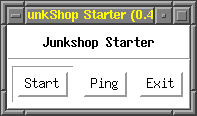

|
This section explains the basic operations of OZ++/frame and the use of the junkshop browser.
The overview of GUI of OZ++/Frame is illustrated in Fig. 4.1--1. The window is composed of menus and the slide/screen display. The slide/screen display is used to draw widgets when requested by the core system library.
The mutator function is activated from the menu.
|
|
There are the following types of menus:
Each menu is illustrated in Fig. 4.1--2.

|

|
||||
| (1)Framemenu | (2)Seriesmenu | (3)Gotomenu | |||

|

|
||||
| (4)Widgetmenu | (5)Junkshopmenu | ||||
When an item in the menu is selected, the following process takes place.
All operation of slides are executed from the menu.
Switching to the first, previous, next and last slides is possible from the Goto menu.
When selecting Delete Slide... in the Series menu, the slide delete confirmation window shown in Fig. 4.1--3 appears. Press the Delete button to confirm or the Cancel button to abort.
It is possible to import slides registered in the junkshop by opening the junkshop browser in the Junkshop menu and execute slide export. For details, refer to section 4.1.5.3.
There are two operating methods for widgets. The user can either operate widgets directly on the slide/screen display or activate from the menu. When operating directly on the slide/screen display, occurred events operated with the mouse or keyboard can be sent to the widget. From the menu, it is possible to display or change widget attributes or delete widgets.
Each widget displayed on the slide/screen display receives occurred events from the mouse or keyboard. Operations to output event are shown in Fig. 4.1--1.
| Widget | Event | Operation |
|---|---|---|
| button | ButtonMouseUp | Click left mouse button |
| radiobutton | RadioButtonSelected | Click left mouse button |
| checkbutton | CheckButton | Click left mouse button |
| field | FieldTextChanged | Click left mouse button then press Return (or Enter) |
To display the widget attribute value, follow the given procedure below.
By following the above mentioned procedure, the widget attribute window as shown in Fig. 4.1--4 appears.
 |
 |
|
| (1) For button widget | (2) For string widget |
To change the attribute value, it is necessary to operate each attribute items in the widget attribute window.
For attributes giving value of character strings or numbers, click the left mouse button on the field displaying the attribute value to enter a new value. Use this method to change attribute values of name, label, geom, size, value and text.
For attributes in which a value is to be selected among a set of values, use the select button to select the appropriate value. Use this method to change attribute values of state, justify, font and font size.
For attribute values that specify colors, the color values are displayed in the widget attribute window. To set colors, click the desired color for change with the left mouse button to open the color setting window as shown in Fig. 4.1--5 then select desired color from either the color pallet or RGB composite.

|
To delete a widget, follow the given procedure below.
By following the above mentioned procedure, the widget delete confirmation window as shown in Fig. 4.1--6 appears. Press the Delete button to confirm or the cancel button to cancel.
The junkshop is an instance repository for the OZ++/Frame. It is possible to store slides and widgets made with the OZ++/Frame by given parts names, as well importing them into OZ++/Frame. The junkshop is a global object that is registered with the entry name ":junkshop" in the name directory.
The operation methods for the junkshop starter to activate the junkshop and junkshop browser to browse contents of the junkshop are explained in this section. Also, registering objects to the junkshop using the junkshop browser and loading such registered objects are explained.
Junkshop starter
The junkshop starter consists of the following functions:
The GUI of the junkshop starter is shown in Fig. 4.1--7.
|  |
The following is the operation method.
Press the Ping button. The dialog box shown in Fig. 4.1--8(1) appears if an object with the entry name ":junkshop" is registered in the name directory and is definitely a junkshop (an instance of class Junkshop). The dialog boxes shown in Fig. 4.1--8(2) appears if there is no object whose name is ":junkshop". Otherwise Fig. 4.1--8(3) appears if the object whose name is ":junkshop" is not an instance of the class "Junkshop".
 |
||
| (1) If a junkshop exists. | (2) If a junkshop does not exist. | |
| (3) If an object of a different class is registered under the entry name ":junkshop." | ||
| (1) When activation of the junkshop is successful | (2) When a junkshop exists | |
 |
||
| (3) When activation of the junkshop is unsuccessful | ||
Junkshop browser
The junkshop browser is a tool that allows browsing of junkshop contents. The GUI of the junkshop browser is shown in Fig. 4.1--10.
The GUI consists of three parts: operation buttons, filter and list. The list displays objects according to type. It is possible to select the object type to display (or not to display) by operating the check button of the filter.
The junkshop browser offers the following functions:
The operation method is given below.
Press the Rescan button
| (1) Entry selection |
| (2) Input new name |
 |
| (3) Rename confirmation |
A check button showing all entry types possible for display in the filter will appear. Check desired selection. "none" will be checked when activated. All checks will be canceled and list of all types will be displayed when "none" is checked (Fig. 4.1--13).
 |
||
| (1) Display for slide and widget | ||
| (2) Display for only slide | ||
 |
||
| (3) Checking "none" | ||
Using the junkshop browser from OZ++/Frame
The junkshop browser can be used as an interface with OZ++/Frame when loading objects from the junkshop into OZ++/Frame or when registering objects made with OZ++/Frame to the junkshop. ImportSlide and ExportSlide buttons become valid as shown in Fig. 4.1--14 when activating from OZ++/Frame (these buttons are not usable in Fig. 4.1--10).
Operation methods are explained below.